This Issue
August 2026 edition
50% vs 64%
Travis County share of recorded flip resales this edition, against its share a year ago (Williamson 31% vs 16%)
Flip exits are leaving the core: Travis County took 50% of this edition's flip resales, down from 64% a year ago, while Williamson nearly doubled to 31%
Flip resales are relocating. Travis County held 50% of this edition's 54 flip sales, down from 64% of 74 a year ago, while Williamson rose to 31% from 16%. The median flip sold about 28 km from downtown, against roughly 19 km a year ago, and Georgetown West (78628) took 7% of exits after none in the year-ago period. Exits are also faster: a median 165-day hold versus 246. Counts, dates and geography are recorded; every dollar figure in this edition is an estimate.
Investor Playbook
What this issue's numbers suggest checking, by investor type. Observations from recorded data — not investment, legal, or tax advice.
Follow the exits into Williamson
Wholesalers
Only 12 assignments surfaced on recorded deeds this edition versus 28 a year ago, and that count is a floor. With Williamson at 31% of flip exits versus 16% a year ago, it is worth building buyer lists in Georgetown West (78628, 33 buys and 4 flips), Round Rock (78664, 28 buys and 3 flips) and Hutto (78634, 27 buys). Bastrop 78602 posted 38 buys and zero flips — that is landlord and land demand, not rehab demand, so pitch accordingly.
Price the shorter hold, not last year's Travis comp
Flippers
Median hold fell to 165 days from 246, and the middle half now runs 90 to 256 days. Estimated single-family flip resales cleared around $322,529 at roughly $140/sqft this period, with estimated margin percentage near 26% — but that margin is back-computed from assumed loan ratios, so underwrite it as a range rather than a level. The data suggests testing acquisitions in the outer ring, where the median exit now sits about 28 km from downtown, and keeping Travis deals to product you can finish inside two quarters.
Basis gap between the core and the corridor is where the yield sits
Landlords
Austin purchases carried an estimated $349/sqft median against roughly $150 in Kyle, $154 in Hutto and $147 in Liberty Hill. Kyle (78640, 31 buys), Elgin (78621, 30) and Dale (78616, 27) all show estimated median buys under about $216,000. Some 1,415 local landlords added 2,823 units since the last drop; 2-4 unit product ran 32 deals at an estimated $446,134. Verify rents locally before assuming the cheaper basis converts to better yield.
Rehab paper is being written by nobody
Private lenders
Thirty recorded private loans versus 156 a year ago, and seller-financed notes down to 155 from 239, leaves short-term rehab capital scarce at a moment when flipper acquisitions stayed high. Over the trailing year only 33% of investor purchases showed recorded financing, with Kiavi at six loans and Lendz at five among the few non-bank names. The gap worth checking is 90-to-180-day paper on outer-county single-family in the estimated $200,000-$350,000 band, where the flip turn is now 165 days.
Small multi is thin; the large trades cluster on the corridor
Multifamily investors
Only 32 2-4 unit purchases were recorded, at an estimated median of $446,134 and roughly $214/sqft, and small multi was 6% of flip resales versus 8% a year ago. The largest residential trades this edition sat in Leander, Round Rock, Kyle and Georgetown, matching the same Williamson-and-south shift showing up in flip exits. Thirteen unspecified multi-family purchases were recorded; treat their estimated values with care, since portfolio prices can be stamped per parcel.
Factoids
Numbers from this period a practitioner would repeat to a colleague. Each computed directly from recorded instruments.
165-day median hold — Median days held on flips resold this edition
trending down · vs 246 days a year ago
Turn times compressed by roughly two and a half months year over year, with 24% of measured flips resold inside 90 days and 9% held past a year. Hold time was measurable on 54 of 112 flips, so treat the tails as indicative.
37 distinct flip sellers — Number of separate sellers behind this edition's flip resales
trending down · vs 62 sellers a year ago
The top ten sellers accounted for 93% of flip resale value this edition, against 35% a year ago. Exit volume is now concentrated in a handful of builder-adjacent and fund sellers rather than spread across the owner-operator bench.
30 private loans recorded — Recorded private-lender fundings this edition
trending down · vs 156 a year ago
Private mortgage recordings are down about 81% year over year and 17% from the prior period. Seller-financed notes fell to 155 from 239, so the two informal channels thinned together.
150 out-of-state purchases — Investor purchases by out-of-state buyers, 17% of the total
holding steady · vs 585 local buys, 66% of the total
California alone accounted for 50 of them, ahead of Utah at 12 and Kansas and New York at 8 each. Out-of-state median purchase price is estimated near $370,431, roughly in line with the local median of about $347,096.
882 investor purchases — Recorded investor acquisitions this edition
trending down · vs 1,064 a year ago; 880 in the prior period
Acquisition volume is flat against the prior period but down about 17% year over year. Investors took 90% of recorded purchase deals; banks and REO accounted for 64 and builders 22.
216 residential lots bought — Vacant residential land purchases this edition
trending up · vs 505 single-family purchases in the same period
Land is now roughly one in four investor buys, concentrated in Bastrop, Elgin, Buda and Georgetown among the largest buyers on record. Condos ran 86 deals and 2-4 unit product 32.
Market Activity — Investor Purchases
Monthly count of investor purchases of MSA properties (left axis) and the median purchase price (right axis), trailing 13 months. The most recent month can grow up to ~15% as late recordings arrive.
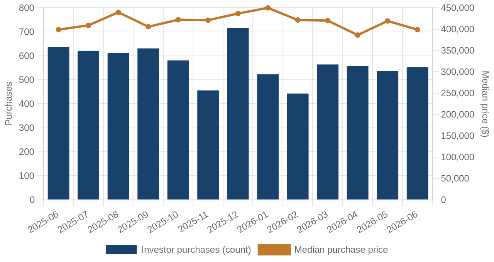
Investor purchases per month (bars) and median purchase price (line), trailing 13 months.
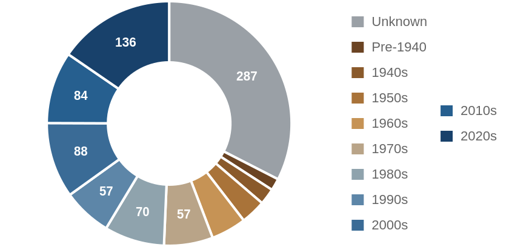
Which vintage of housing investors bought this edition, by decade built.
Where the Money Went
The geography of the period's investor activity: which zip codes saw the most recorded deals, and the largest individual transactions at street level.
The 8 busiest zip codes for investor deals
Pins rank the busiest zips by recorded investor deals (purchases + flips of existing homes) this period — #1 busiest; orange = top 3; pin size scales with deal volume. Median buy is the typical investor purchase; median sale the typical flip resale. Click a pin for details; full table below.
| # | Zip | Area | Purchases | Flips | Median buy | Median sale |
|---|
| #1 | 78745 | South Austin / Westgate | 37 | 3 | $448,210 | $610,470 |
| #2 | 78602 | Bastrop | 38 | 0 | $196,540 | n/a |
| #3 | 78628 | Georgetown West | 33 | 4 | $379,050 | $388,858 |
| #4 | 78641 | Leander | 34 | 1 | $410,822 | $425,733 |
| #5 | 78640 | Kyle | 31 | 3 | $188,700 | $312,722 |
| #6 | 78621 | Elgin | 30 | 1 | $205,332 | $194,712 |
| #7 | 78664 | Round Rock | 28 | 3 | $299,294 | $266,000 |
| #8 | 78634 | Hutto | 27 | 1 | $327,559 | $303,240 |
Dollar figures on this page are estimates. This county does not disclose sale prices, so 47% of them are back-computed from the recorded mortgage at an assumed loan-to-value. Treat every price, margin and per-foot figure as indicative. Counts, dates, hold times, parties and geography come from the deed record itself and are unaffected.
A representative deal in each of the busiest zips
One deal per zip: the largest matching this market's typical house (typical for this market: 1827 sqft, 3 bed, built around 1995; priced within 4x the county assessment and under 5x its own zip's median).
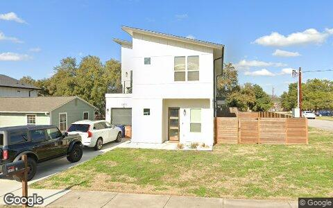
$806,239 · Purchase
3410 DALTON ST APT 1, Austin 78745
Condo · 1,751 sqft · May 15
Street View Feb 2025 — before the purchase
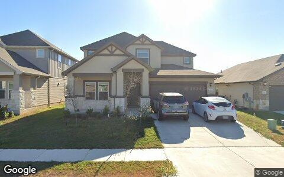
$579,268 · Purchase
206 WIND TRL, Hutto 78634
Single family · 2,645 sqft · Jun 9
Street View Sep 2024 — before the purchase
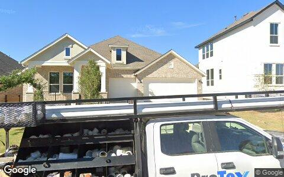
$556,629 · Purchase
208 SPRINGHOUSE RD, Georgetown 78628
Single family · 2,461 sqft · May 15
Street View Apr 2024 — before the purchase
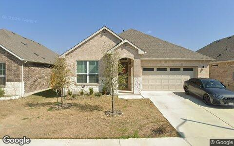
$350,800 · Purchase
420 MOUNTAIN SKY BND, Leander 78641
Single family · 2,431 sqft · May 12
Street View Feb 2025 — before the purchase
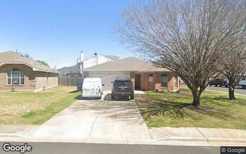
$276,972 · Purchase
121 PRIMROSE BLVD, Kyle 78640
Single family · 1,654 sqft · Jun 17
Street View Mar 2022 — before the purchase
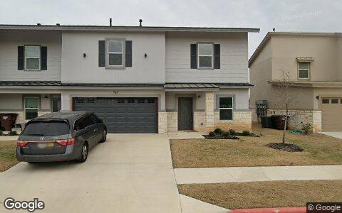
$268,128 · Purchase
2105 TIGER TRL UNIT 503, Round Rock 78664
Condo · 2,221 sqft · May 21
Street View Feb 2024 — before the purchase
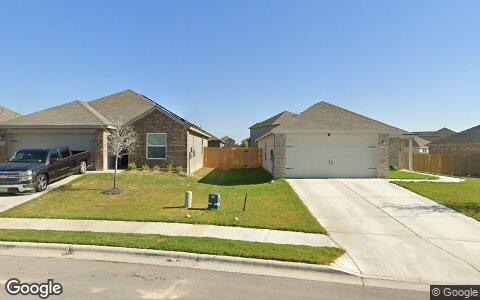
$155,500 · Purchase
13028 TORREY REYNOLDS DR, Elgin 78621
Single family · 1,520 sqft · May 14
Street View Oct 2024 — before the purchase
Deal sheet — private lending, in date order
Private loans recorded against residential property this period, oldest first.
| Date | Lender | Amount | Property | Use |
|---|
| May 6 | Huynh Truc | $313,000 | 20403 Phebe Foster ST, Manor 78653 | Single family |
| May 18 | Franke Brian | $535,000 | 6704 Duquesne DR, Austin 78723 | Single family |
| Jun 22 | Hawthorne Rodney | $580,000 | 6004 Whipple Way, Austin 78745 | Condo |
| Jun 23 | Two Squared LLC | $600,000 | 307 Sumalt Gap Way, Austin 78738 | Single family |
| Jun 24 | Chavez Jose | $199,000 | 11620 Carbrook RD, Manor 78653 | Single family |
Largest flip margin deals of the period, at street level
Gross margin = recorded sale price minus the flipper's recorded purchase price. Purchase deeds are recoverable for roughly 4 in 10 flips; rehab and carry costs are not public record.
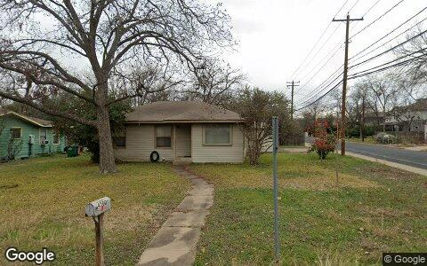
$834,358 gross · bought $555,275 (Jul 2025) → sold $1.4M
4500 JINX AVE, Austin 78745
Single family · 1,376 sqft · Jun 16
Street View Jan 2025 — before the flip (pre-renovation)
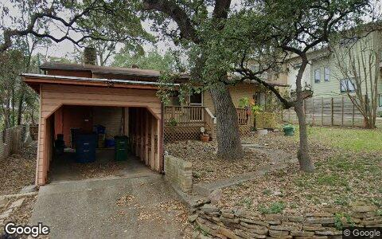
$412,300 gross · bought $857,850 (Jun 2025) → sold $1.3M
2206 LA CASA DR, Austin 78704
Single family · 885 sqft · May 27
Street View Jan 2025 — before the flip (pre-renovation)

$27,223 gross · bought $210,801 (Mar 2026) → sold $238,024
1000 PLATEAU TRL, Georgetown 78626
Single family · 2,208 sqft · Jun 16
Street View Apr 2024 — before the flip (pre-renovation)
Flip Structure — Year over Year
How the flip market itself is changing: margins, who is doing the flipping, what they flip, and where. Same two calendar months, this year vs last, from the current data extract.
| Flip market structure | Same months last year | This edition |
|---|
| Flips sold | 74 | 54 |
| Median sale | $535,831 | $453,297 |
| Median $/sqft | $292 | $256 |
| Sale vs county-assessed | 1.22× | 1.04× |
| Median gross margin (matched buys) | $116,538 | $85,940 |
| Median margin % | 25% | 26% |
| Median hold | 8.1 mo | 5.4 mo |
| Homes bought by flippers | 198 | 223 |
| Net to inventory (bought − sold) | +124 | +169 |
| Active flippers | 62 | 37 |
| Top-10 flippers' revenue share | 35% | 93% |
| Median house: sqft / beds / built | 1951 / 4 / 1999 | 1926 / 3 / 1996 |
| Pre-1950 stock share | 1% | 6% |
| 2–4 unit share | 8% | 6% |
| Median distance from downtown | 19.4 km | 27.8 km |
Dollar figures on this page are estimates. This county does not disclose sale prices, so 47% of them are back-computed from the recorded mortgage at an assumed loan-to-value. Treat every price, margin and per-foot figure as indicative. Counts, dates, hold times, parties and geography come from the deed record itself and are unaffected.
Homes bought counts every deed recorded to a known flipper in the window, resold or not. Net to inventory is that minus flips sold. The standing stock is in the Flip Pipeline section.
Attributed profit per flip (per-investor aggregates, by drop period): Jul 25→Feb 26: 3,658 flips, $1.5M/flip · Feb 26→Jun 26: 915 flips, n/a (revisions) · Jun 26→Aug 26: 321 flips, n/a (revisions).
County mix (share of flips, last year → this edition): Travis 64%→50% · Williamson 16%→31% · Hays 16%→13% · Caldwell 3%→4% · Bastrop 1%→2%.
Biggest zip share moves: Georgetown West 0.0%→7.4% · Spicewood 0.0%→5.6% · South Austin / Shady Hollow 6.8%→1.9% · Round Rock 1.4%→5.6% · Jarrell 0.0%→3.7% · Lago Vista 5.4%→1.9%.
Flip Pipeline — Buying, Selling and Inventory
Homes bought by known flippers and homes they resold, per month, alongside the stock sitting in flipper hands. A house enters inventory when a flipper buys it and leaves on the next recorded sale, at any price. Purchases still unsold after five years are treated as holds and drop out.
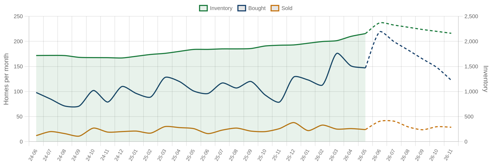
Solid = recorded, dashed = projected. Green bars are inventory on the right axis: homes bought and not yet resold. Aged out is purchases passing five years unsold. Inventory moves by bought minus resold minus aged out.
| Flip pipeline | Bought / mo | Resold / mo | Aged out / mo | Inventory |
|---|
| Latest recorded month (2026-05) | 152 | 117 | 74 | 3,204 |
| Projected (2026-11) | 119 | 107 | 56 | 2,869 |
Method: a straight-line trend through the last 24 months, adjusted for the month of the year. Tested by hiding the most recent six months and predicting them, it missed purchases by 26%, sales by 13% and inventory by 2% on average — The series stops before the newest month or two, where deeds are still recording.
Who's Funding the Deals
First mortgages open on flipper purchases from Jul 2025 – Jun 2026 that have not yet resold. 33% carried recorded debt; the rest closed cash or off-record. Ranked by deal count.
33%
Purchases financed
323 of 966 flipper purchases carried a recorded first mortgage
$339,000
Typical loan
recorded lien amount; this county does not disclose sale prices, so loan-to-price cannot be computed here
| Lender | Loans | Borrowers | Median loan | Median purchase |
|---|
| United Wholesale Mortgage LLC | 13 | 12 | $299,475 | $300,594 |
| Mortgage Research Center LLC | 11 | 11 | $480,000 | $470,400 |
| Rocket Mortgage LLC | 11 | 10 | $273,000 | $296,000 |
| Fairway Independent MTG Corp | 8 | 8 | $427,824 | $345,979 |
| CMG Mortgage INC | 7 | 7 | $472,500 | $471,419 |
| Kiavi Funding INC | 6 | 3 | $210,000 | $221,000 |
| Dhi Mortgage Company, LTD. | 6 | 4 | $365,800 | $253,850 |
| Wiggins Matthew | 5 | 1 | $200,000 | $2.0M |
| Lendz Financial | 5 | 1 | $202,150 | $271,320 |
| Nexus Series B LLC | 5 | 1 | $725,000 | $350,000 |
Dollar figures on this page are estimates. This county does not disclose sale prices, so 47% of them are back-computed from the recorded mortgage at an assumed loan-to-value. Treat every price, margin and per-foot figure as indicative. Counts, dates, hold times, parties and geography come from the deed record itself and are unaffected.
Rates and terms are not published: the county feed models both. Borrowers counts the distinct flippers on each lender's book. Loan vs price is the recorded first mortgage divided by what the buyer paid. Above 1.00x the lender is funding purchase plus rehab; below it the buyer brought cash to the table. Blanket mortgages covering several parcels are excluded, as are loans outside 0.1x-3x the price. Rates and points are not public record.
Flipper Profile — The Working Flipper
The 70th–90th percentile of local flippers by lifetime flip count — the established operators below the whales: 3–8 lifetime flips each. Bath counts are not in the assessor extract.
565
Flippers in the band
each with 3–8 lifetime flips (avg 4.1)
$92,435
Median gross margin
645 flips matched to their purchase price
6.2 mo
Typical hold
purchase to resale, matched deals
1827 sqft · 3 bd
Typical house
median year built 1995
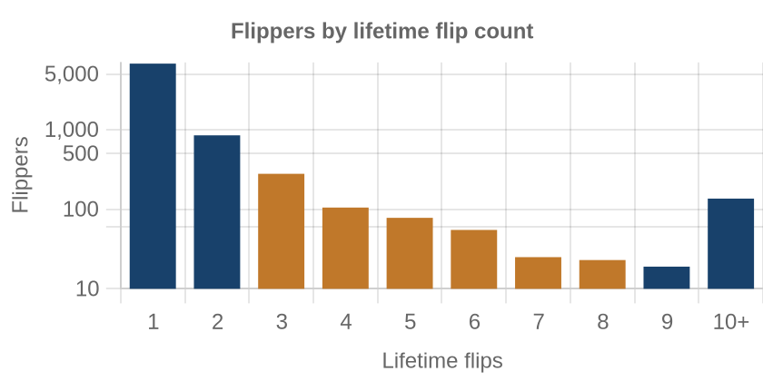
flippers by lifetime flips · orange = this band
Where they work: South Austin / Westgate (78745) 7% · Mueller / Windsor Park (78723) 4% · Bastrop (78602) 4% · Lago Vista (78645) 3% · Manor (78653) 3%.
Market Pulse
| per month, 2025 | per month, 2026 | change | avg/mo 2yr | avg/mo 4yr |
|---|
| ▲ Homes bought by flippers | 99 | 112 | +13% | 105 | 96 |
| ▼ Flips sold (deeds) | 37 | 27 | -27% | 100 | 97 |
| ▼ Lending deals funded | 304 | 92 | -70% | — | — |
| ▼ Seller/notes held (net) | 953 | 309 | -68% | — | — |
| Investors (net) | -897 | 446 | — | — | — |
Flips and flipper purchases = recorded deeds, same two months each year; their 2- and 4-year columns are per-month averages of the deed series. The remaining rows come from the investor file, which spans 13 months, so they have no multi-year average (2026: Jun 2026 → Aug 2026; 2025: Jul 2025 → Feb 2026).
Past Issues
Methodology
Source Data
County recorder & assessor via FARES
Every figure is computed from recorded instruments (deeds, mortgages, assignments) and assessor property records for the five counties of the Austin-Round Rock-Georgetown MSA. No surveys, no estimates, no listings data.
This edition analyzes transactions dated May 1 – June 30, 2026, as recorded through the 2026-08 data extract.
Who Counts as an Investor
Transaction-pattern identification
Investors are entities whose recorded transaction history looks like investing: rental holding (landlords), short-hold resales (flippers), private mortgage lending, note holding, or contract assignment (wholesalers). Banks, homebuilders, iBuyers, SFR funds, and government entities are identified by name and reported separately from small investors.
How Comparisons Work
Attribution deltas + same-window comparisons
The Market Pulse reports activity attributed between successive data drops, from the per-investor lifetime totals maintained upstream — periods differ in length, so per-month rates are shown. Elsewhere, "vs. year ago" compares the same calendar months one year earlier, counted from the same data extract. Transfers under $5,000 (quitclaims, partial interests) are excluded everywhere. Counts lag recording by 4–8 weeks, and the newest month can grow up to ~15% as late records arrive — direction is reliable before magnitude.
Known Limits
Floors, not ceilings
Wholesale assignments only appear when they touch a recorded deed, so those counts are a floor. Flip hold times are measured from the prior recorded sale. Names are the owner of record, which may be an LLC or trust.
About
Purpose
A working tool for small real estate investors in the Austin metro: what actually closed, where, at what prices, and what it suggests checking next — one theme per issue.
Cadence
Published with each bi-monthly data drop, covering the two most recent complete months of recorded activity.
Disclaimer
Observations from public records, not investment, legal, or tax advice. Past activity does not guarantee future results. Verify any property or counterparty independently before transacting.